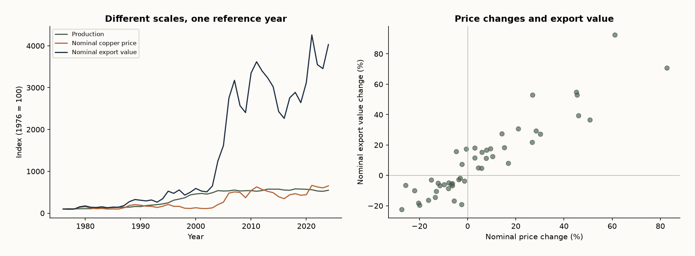

Chile’s copper: volume versus valueCobre chileno: volumen frente a valor
Mining · Official public data
Minería · Datos públicos oficiales

Business questionPregunta de negocio
What should management monitor when export value grows faster than production?
¿Qué debe vigilar la gerencia cuando el valor exportado crece más que la producción?
Method & validationMétodo y validación
Reconcile 49 annual observations from three Cochilco workbooks. Normalize years, verify one-to-one joins, compare growth rates and index each series to 1976. SQL window functions reproduce the annual changes.
Conciliación de 49 observaciones anuales de tres archivos Cochilco. Normalización de años, uniones uno a uno, variaciones e índices base 1976. Funciones de ventana SQL reproducen las variaciones.
What the data saysQué dicen los datos
In 2024 production rose 4.9%, nominal export value 16.7% and nominal LME price 7.9%. Export growth is not a production-growth metric.
En 2024 la producción creció 4,9%, el valor nominal exportado 16,7% y el precio nominal LME 7,9%. El crecimiento exportador no mide el crecimiento productivo.
RecommendationRecomendación
Maintain separate physical-volume, price and export-value indicators. Investigate their divergence before revising operating capacity assumptions.
Mantener indicadores separados de volumen físico, precio y valor exportado. Investigar sus diferencias antes de revisar supuestos de capacidad operativa.
Limits of the evidenceLímites de la evidencia
Aggregate annual history through 2024; no mine-level costs, sale contracts or export tonnage. Prices and export values are nominal. Correlation between changes (0.923) is descriptive, not causal. A source typo in 1951 lies outside the 1976–2024 scope; it was not silently corrected.
Historia anual agregada hasta 2024; sin costos por faena, contratos ni tonelaje exportado. Precios y exportaciones nominales. Correlación entre variaciones (0,923) descriptiva, no causal. Un error de año en 1951 está fuera del período; no se corrigió silenciosamente.